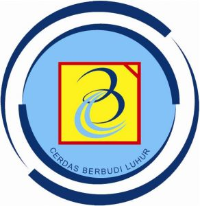

Arsita Rahmawati Dewi Rayono
Tangerang Selatan | 088740097336 | arsita3rd@gmail.com
Tangerang Selatan | 088740097336 | arsita3rd@gmail.com
Seorang pekerja profesional yang memiliki pengalaman selama 6 tahun dalam memasarkan produk, menjalin relasi dengan pelanggan, memberikan layanan transaksi, melakukan pengadaan barang (purchasing), mengelola administrasi, dan menyusun laporan. Terampil dalam berbicara di depan umum, bekerja sama dengan tim, dan memecahkan masalah secara efektif. Berminat untuk mengembangkan karir profesional di bidang sales, marketing, dan purchasing.
Co-Owner
Sales & Marketing
Sales & Marketing
Purchasing (Internship)
| Logo | Institusi | Program Studi | Periode |
|---|---|---|---|
| Universitas Siber Asia | PJJ-Informatika (S1) | 2024 - Sekarang | |
|  | Universitas Budi Luhur | Manajemen Keuangan dan Bisnis (S1) | 2013 - 2018 |
| MAN Majenang | IPS | 2010 - 2013 |
| Nama Sertifikasi | Lembaga | Tahun |
|---|---|---|
| Digital Marketing Fundamentals | Google Digital Garage | 2022 |
| Project Management Basics | PMI Institute | 2021 |